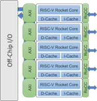
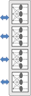

Celerity is an accelerator-centric system-on-chip (SoC) which uses a tiered accelerator
fabric to improve energy efficiency in the context of high-performance embedded systems.
The SoC is a 5 × 5 mm 385 M-transistor chip in TSMC 16 nm designed and
implemented by a modest team of over 20 students and faculty from the University
of Michigan, Cornell University, and the University of California, San Diego,
as part of the DARPA Circuit Realization At Faster Timescales (CRAFT) program.
Celerity is an accelerator-centric system-on-chip (SoC) which uses a tiered accelerator
fabric to improve energy efficiency in the context of high-performance embedded systems.
The SoC is a 5 × 5 mm 385 M-transistor chip in TSMC 16 nm designed and
implemented by a modest team of over 20 students and faculty from the University
of Michigan, Cornell University, and the University of California, San Diego,
as part of the DARPA Circuit Realization At Faster Timescales (CRAFT) program.

General Purpose Tier
A few fully featured RISC-V processors capable of running general-purpose software including an operating system.
- Rocket : bsg_rocket
- RoCC Doc: RoCC Doc V2

Massive Parallel Tier
Hundreds of lightweight RISC-V processors, a distributed, non- cache-coherent memory system, and a mesh-based interconnect.
- Core Array: bsg_manycore
- IP library: bsg_ip_cores

Specialization Tier
Application-specific accelerators (possibly generated using high-level synthesis).
- BNN FPGA: bnn-fpga